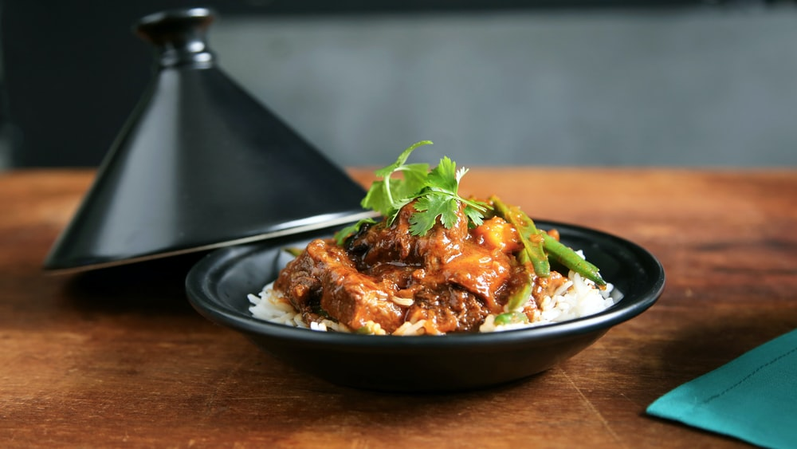

Sri Lanka Beef Curry

Description
This savory curry dish delights the senses with an aromatic blend of
spices from around the globe. The ultimate comfort food to warm you
up on a cold day.
Ingredients
- 3 pounds beef stew meat, cut into 1 inch cubes
- 6 cloves garlic
- 1 (1 inch) piece fresh ginger root - peeled, sliced and crushed
- 3 ½ tablespoons white vinegar
- 2 teaspoons salt
- 1 tablespoon ground black pepper
- 1 tablespoon curry powder, toasted
- 1 ½ tablespoons cayenne pepper
- 3 tablespoons vegetable oil
- 8 fresh curry leaves
- 4 strips pandan leaf
- 1 onion, sliced
- 1 (1 inch) piece cinnamon stick
- 4 green cardamom pods
- 2 whole cloves
- 2 tablespoons tomato paste
- 1 cup water
- 1 cup thick coconut milk
Directions
- Rinse the beef and pat dry. Crush the garlic cloves into a paste and combine it with the crushed ginger.
Add the vinegar, salt, pepper, roasted curry powder, and cayenne. Mix in the beef cubes and toss to coat.
Set aside for 30 minutes.
- Heat the oil in a Dutch oven over medium heat. Add the curry leaves and pandan strips. Stir in the onions.
Cook, stirring frequently, until the onion has softened and turned translucent, about 5 minutes.
- Mix in the beef cubes and cook until browned on all sides, about 10 minutes. Stir in the cinnamon stick,
cardamom pods, and cloves. Add the tomato paste and water and mix well.
- Simmer, covered, on low heat for 1 1/2 hours or until the meat is tender. Check the curry every half hour;
you may need to add more water (up to 1 cup) if the curry is too dry and is sticking to the pan.
- Add the coconut milk and heat through. Taste and adjust the seasonings before serving.
Notes
- Prep: 25 mins
- cook: 1 hr 45 mins
- additional: 30 mins
- total: 2 hrs 40 mins
- Yield: 8 servings
Roasted curry powder is available from specialty purveyors or online sources. To roast your own curry powder,
heat 1 tablespoon of curry powder in an ungreased skillet over medium heat, stirring frequently, until fragrant
and slightly browned. Immediately transfer the spice to a bowl to cool.
Nutrition Facts
Per Serving: 627 calories; protein 46.7g; carbohydrates 7.5g; fat 45.1g; cholesterol 147.9mg; sodium 728.5mg.